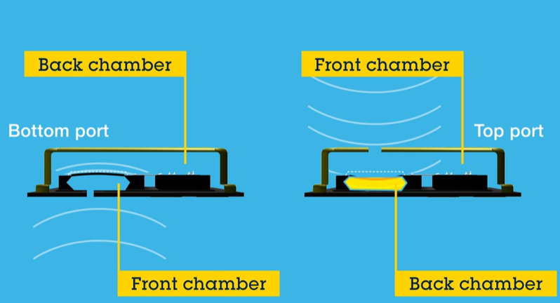

声压与声压级 SPL
当压缩区和稀疏区经过某个固定观察点时，该点的空气压强会围绕静态大气压上下变化。 声压 就是这种瞬时压强偏离，单位 Pa。 声压级以空气中的参考声压 表达量级。
REQUIRED FOUNDATION / 01
声音首先是以空气为介质传播的机械波。机器接收的是换能、采样后的数列， 而听觉系统感受到的是持续、起音、节奏与变化。本章从同一条时间轴出发， 连接声学、数学描述与人的聆听经验。
LISTEN FIRST
先听，不看波形。注意每段声音的持续时间、是否突然开始、 是否粗糙或规则。随后我们将把这些听觉印象放到时间轴上解释。
试听后，先用三个词描述每个样本。
A = 摩擦噪声，B = 短促敲击，C = 持续纯音（ 正弦波）。 纯音是用于建立基准的理想化信号，而非真实人声或乐器音。
SIGNAL CHAIN
声源机械振动振膜 / 音叉 / 声带
→空气纵波 / 疏密波压缩与稀疏交替传播
→传感器麦克风换能振膜位移 → 电信号
→计算机A/D 采样数字序列
发声体的机械振动会推动相邻空气微团前后往复运动，形成一段段压缩与稀疏交替的扰动。 这些疏密变化沿传播方向向外传递，所以声波是纵波，又称疏密波； 传播的是压强扰动与能量，而不是一团空气从声源一路跑到耳朵。
当压缩区和稀疏区经过某个固定观察点时，该点的空气压强会围绕静态大气压上下变化。 声压 就是这种瞬时压强偏离，单位 Pa。 声压级以空气中的参考声压 表达量级。
若声源做理想简谐振动，固定观察点记录到的声压变化可以近似为正弦波。 一次“压缩 → 稀疏 → 再压缩”对应一个周期 ，每秒重复次数就是频率 ，单位 。
声速 是波的传播速度， 空气中约 ； 质点速度 是空气微团的局部往复速度。声强 描述单位面积通过的声功率，瞬时声强来自声压与质点速度的共同作用。
从波动方程到近场 / 远场
更完整地看，声压不是只随时间变化的曲线，而是同时依赖空间位置和时间的场： 。 下面这条推导线把“完整声压场”一步步化成“远场 / 近场中的声压-质点速度关系”。
在均匀、无损、无声源的空气中，声压扰动满足线性声学波动方程。 它表达的是：空间中的弯曲变化和时间上的加速变化彼此约束，扰动因此以声速 传播。
对单一频率的简谐声场，所有位置共享同一个时间因子 ； 剩下的 记录空间中的幅度和相位。 称为波数，表示单位距离累积多少相位：
理想点声源向外辐射时， 描述幅度随距离衰减， 描述相位随距离累积。对空间声压求径向梯度，就得到声压在空间上变化的快慢：
这一步来自牛顿第二定律：空气微团两侧的声压不同，会产生净压力并推动它加速。 写成连续形式，就是线性化动量方程；再代入简谐形式，时间求导等价于乘以 。
是传播到距离 所累积的相位，也可理解为用波长衡量的无量纲距离。 当 时， 很小，回到远场近似；当 不大时，声压和质点速度不再简单同相同幅比例，这就是近场需要单独讨论的原因。
建立直觉 / SOUND PRESSURE LEVEL
是对数标度：声压级每增加 ，对应的 约增大 倍。下列值为常见距离与环境下的近似参考， 实际读数会随距离、空间反射和声源状态改变。
约 近距离烟花爆炸 / 枪声瞬态
约 摇滚扩声近处 / 紧急警报器近处
约 摩托车或大型设备近处
约 繁忙道路旁 / 较响吸尘器
约 20 mPa约 1 m 处日常交谈
约 2 mPa安静室内 / 轻微背景声
约 0.2 mPa极安静环境中的细微声音
约 的听阈参考，不代表“没有声音”
WHO 安全聆听提示：听力风险取决于声级与累计暴露时间
世界卫生组织指出，声音越响、持续越久、暴露越频繁，听力损伤风险越高： 极高声级的短时或一次性暴露可能立即伤害内耳； 中等偏高声级的长时间或反复暴露也可能累积为不可逆的噪声性听力损失。
课堂实践：不要用耳机模拟极高声压；降低音量、缩短持续试听时间并安排安静间歇。 数字信号的 只表示数字满幅，不能判断耳朵接收到的声压是否安全。
依据：World Health Organization. Deafness and hearing loss: Safe listening, updated 6 March 2026.
麦克风有多种换能原理。本课以手机、耳机与智能设备中常见的电容式 MEMS 麦克风为典型： 声压作用在微加工振膜上，振膜与背板构成可变电容，间距变化引起电容量变化。 封装内的 ASIC 提供偏置与读出电路，再将微弱信号变为模拟输出，或进一步转换为数字输出。
声压 空气压缩 / 稀疏
→MEMS 振膜机械耦合位移
→电容 振膜 + 固定背板
→ASIC 输出模拟电压 / 数字数据
灵敏度描述给定声压能产生多少输出。模拟输出麦克风通常在 、 （即 ） 条件下标为 ；数字输出器件也常给出 。
模拟输出示例： 表示 输入时约产生 输出； 灵敏度越负，同样声压下电输出越小。

 观看视频 · 0:38
观看视频 · 0:38
核心原理没有改变：MEMS 麦克风仍然把“声压造成的机械振膜位移”变成“电容量变化”。 不同之处是可动结构被微加工在硅片上，并与偏置、放大及输出转换所需的 ASIC 集成到微型封装内。 ST 的器件既有顶开孔也有底开孔设计，声孔位置会影响声音进入 MEMS 结构的路径。

沿着剖面图读懂 MEMS 封装
数字 MEMS 麦克风的信号路径
MEMS 可变电容
→ASIC AFE偏置与低噪读出
→ADC片内量化
→PDM数字脉冲流
对于模拟输出 MEMS，ADC 仍位于麦克风之外；对于数字输出 MEMS，ADC 可集成在 ASIC 中。 这也解释了为什么模拟器件常给出 dBV/Pa，而数字器件可以直接给出 dBFS/Pa 灵敏度。
剖面对照图为课程本地素材；器件图片、尺寸说明与短视频入口来自 STMicroelectronics：MEMS 麦克风 官方页面（访问于 2026-05-27）。剖面对照图可离线显示；ST 产品图与视频播放需要网络连接。
前置放大器或 MEMS 内部 ASIC 将麦克风的微弱信号调理到 ADC 可处理的范围。 ADC 做两件事：先在离散时刻“抓住”模拟电压，再把连续电压映射到有限个数字码。 因此未经声学校准的波形 首先代表数字幅度，不直接等于 Pa 或 dB SPL。
传统多 bit PCM ADC
[ +2, +3, 0, -2, -3, -2, 0, +2, +3, 0, -2, -3, -2, +3 ]
每个采样点直接对应一个多 bit 幅度码；本例序列长度与图中的蓝色采样点数量一致。
1-bit σ-δ / PDM
1110 1111 1010 0010 0000 0010 1010 1110 1111 1010 0010 0000 0010 1111
PDM 的 bit 率通常远高于 PCM 采样率；这里示意为 ，实际数字 MEMS 常更高。数字低通和抽取会把 PDM 转成 PCM。
不要把三种幅度参考混在一起
只有知道麦克风灵敏度、前置增益和 ADC 标定关系，数字 dBFS 才能换算为现场 dB SPL。
读一张时域图时，看三件事
STATISTICS
波形有正有负，直接求平均会相互抵消。先平方使其都为正， 再平均并开方，得到与原始幅度具有相同量纲的整体强度指标。
每当相邻样本的符号改变，波形就跨过零线一次。 粗糙噪声或较快振荡通常产生较高 ZCR；低频、平滑信号通常较低。
真实音频随时间变化，常把信号切成短帧，逐帧得到 RMS/ZCR 轨迹。
RMS 随录音增益变化；比较样本前应考虑音量归一化和录制条件。
相同 RMS 或 ZCR 的声音仍可能听起来完全不同。
OBSERVE
当前选择：持续纯音（正弦波）
Peak0.00最大幅度
RMS0.00平均能量
ZCR0.00跨零变化率
HUMAN HEARING
敲击、拨弦、爆破音之所以容易被辨认，部分原因在于声音开始的一瞬间包含鲜明线索。 只看长期平均能量会淡化这种信息。
响度随时间的起伏帮助我们感知语音节奏、音节边界和音乐律动。 RMS 的逐帧轨迹可以粗略描写这种包络。
听觉不会逐采样点“阅读”声音，而是在短时间范围内整合能量与变化； 因而音频分析常采用窗口和帧作为基本单位。
两耳接收声音的微小时差可以支持定位。虽然本章尚不展开空间听觉， 但它提醒我们：声音中的时间结构具有知觉意义。
注意：人耳听觉远不等于 RMS 或 ZCR 计算器。这里的统计特征只是便于机器使用的低阶描述， 它们能够对应一部分听觉现象，却不能完整还原听觉表征。
WHY FREQUENCY
本章最后一个问题
不会。长笛和纯音可能都平稳持续，两个音符也可能具有相似强度， 但它们的音高和音色仍明显不同。时域特征告诉我们“何时、整体多强、是否快速变化”， 却没有直接拆开声音由哪些频率成分构成。
周期重复指向音高，但复杂声音需要更系统的频率描述。
不同谐波构成决定音色，仅凭 RMS/ZCR 很难区分。
语音和环境声的辨识依赖能量集中在哪些频段。
本章参考来源
`Audio Signal Processing for Machine Learning`：Sound and Waveforms； Intensity, Loudness, and Timbre；Time-domain Audio Features； RMS Energy and Zero-Crossing Rate。
延伸阅读
Richard F. Lyon, Human and Machine Hearing, Part I: Sound Analysis and Representation Overview / Human Hearing Overview。